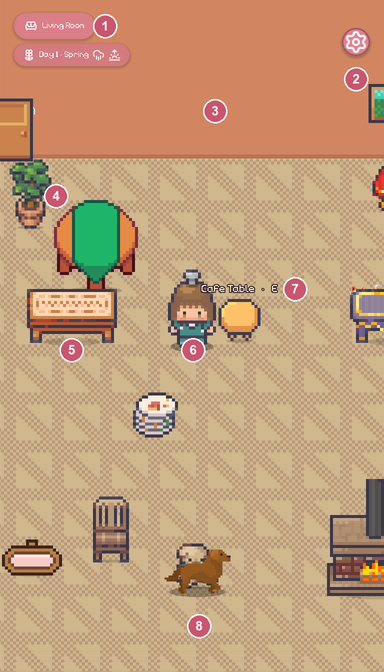
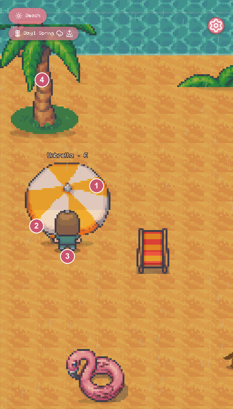
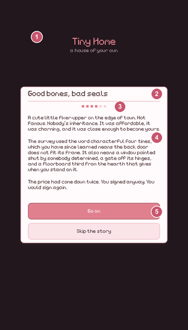
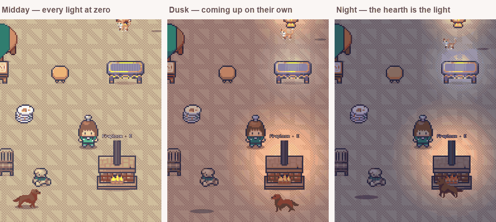

Part two · Chapters four to eight
Twelve thousand lines, twenty-five rooms and eight mechanisms doing all the work. What each one is, where it appears on screen, and the code that carries it.
Part one
Almost every Godot project is a tree of .tscn files. This one is a tree of function calls. That single decision explains most of what follows, and it is the first thing worth forming your own opinion about.
There is one scene file, scenes/Main.tscn, holding one node with one script. Everything else — the room, the resident, the dog, the camera, the weather, the HUD, the forty-three cards — is built by hand in _ready():
scripts/Main.gd → _ready()
# Everything is built in code rather than wired up in the editor, so the project
# runs the moment you open it and there are no .tscn files to keep in sync.
func _ready() -> void:
_setup_input()
_build_daynight()
_room_view = RoomView.new()
add_child(_room_view)
_player = Player.new()
_player.bounds = Game.BOUNDS
add_child(_player)
_player.arrived.connect(_on_player_arrived)
You gain a project with no hidden state. Nothing is configured somewhere you cannot grep, and a scene file that has drifted from the script expecting it — one of the commonest ways a Godot project rots — cannot happen here.
You pay in the editor. There is nothing to look at, no inspector to nudge. Every visual decision is typed as a number and then run to be seen, which is exactly why Part five exists: in a project shaped like this, verification is not discipline, it is the only feedback loop there is.
The trade only works because rooms are data, not scenes. A room is a list of dictionaries in RoomData, and RoomView turns any such list into sprites. Adding the eight town rooms needed no new node work at all — just more rows.
Game holds all mutable state and every rule that touches it. Sfx holds the audio. Those are the only autoloads, deliberately — the usual failure mode is a dozen globals with no clear owner.
Nineteen of the twenty-two scripts declare a class_name, making them globally addressable types without being singletons. Authored content lives in those: RoomData, StoryData, LoveData, NeighborData, GhostData, Assets, DecorCatalog. Which gives you the single most useful rule for finding anything:
If it changes while you play, it is in Game. If it was authored, it is in a data script.
grep -c "" scripts/*.gd for sizes, grep -l "^class_name" scripts/*.gd for the global types. If mutable state ever appears outside Game, that is the thing to be suspicious of.
Part two
Three screens from the running game, with every element traced back to the file that draws it. Start here — the rest of this document assumes you can point at a thing and name its owner.

Living room, day one. 768×1344, shown at half size.
Game.state_changed fires, never polled.Game.ROOM, plus the vignette. No nodes, just draw calls.z_index = position.y sorts them correctly against everything.
The beach. The canopy is drawn above the resident; the rest of the umbrella is not.
OVERHEAD_Z — above every character whichever side you stand.
Page four of the opening. Every card in the game has this anatomy.
UI.panel().Part three
Nearly all of the game is these eight. Learn them and the remaining twelve thousand lines are mostly content — furniture rects, story text, card layouts — arranged around them.
One rule: whoever's base is lower on the floor draws in front. A character's base is their feet; a piece of furniture's base is the bottom of its art. That last word is load-bearing, and getting it wrong was the plant-in-front-of-the-character bug.
scripts/Assets.gd → base_offset_tex()
# Depth used to be measured to the bottom of the TEXTURE, but 42 of the 127 # sprites here carry transparent padding underneath — up to 78px once scaled. static func base_offset_tex(tex: Texture2D, sc: int) -> float: var half := float(tex.get_height() * sc) * 0.5 var img: Image = tex.get_image() var used := img.get_used_rect() return float(used.position.y + used.size.y) * float(sc) - half
Every consumer reads that one number, so depth and shadows cannot disagree:
s.z_index = FLOOR_Z if FLAT_IDS.has(oid) else int(centre.y + Assets.base_offset(oid))
Two exceptions, both editable tables rather than special cases in code. FLAT_IDS (rugs, mats, flowers) are pinned below every character, because a rug is part of the floor rather than a short object. Assets.OVERHEAD lists things you stand underneath, drawn as two layers split at a fraction of the visible art:
scripts/RoomView.gd → _add_overhead()
# Both halves are placed with `offset`, never with `position`. A Sprite2D draws
# its region centred on its position, so clipping a centred sprite moves the art
# unless you compensate — and compensating with `position` breaks the two things
# that read it: the depth sort and the shadow.
s.region_enabled = true
s.region_rect = Rect2(0, split_row, tex_w, tex_h - split_row)
s.offset = Vector2(0, split_row * 0.5)
./tools-test.sh — the depth group asserts, for all 152 pieces, that z_index equals the art base and that the nearest shadow is within 6px of it.
Five stages, and here the order genuinely matters — each consumes the previous one's output.
An authored rect on the original 720×1280 stage, with the id that finds its art and the action that runs when you use it. The only place furniture is described.
The web build authored on a smaller stage. Every coordinate is multiplied through once, so nothing had to be re-guessed by hand when the port moved to a bigger grid.
Rooms are not all one size. ROOM_MULT makes the high street 2.2× wide, and this stretches the authored layout across the extra floor rather than leaving it huddled on the left.
Landscape is not a camera change, it is a different room: every rect is transposed through fixed factors so the furniture lands somewhere sensible in a wide window.
Turns the finished list into Sprite2Ds, measures each one's base for depth and its silhouette for a shadow, and records a hit rect so tapping works.
Three layers, added in that order, each fixing a specific complaint. A navigation mesh is baked from the room's blocking boxes whenever furniture moves, so routes go around the couch instead of grinding along it:
scripts/Main.gd → _rebuild_navmesh()
var poly := NavigationPolygon.new() # Inset by more than the body radius: a route that shaves a corner puts them # inside the furniture, and then the slide has to dig them out. poly.agent_radius = 22.0 var src := NavigationMeshSourceGeometryData2D.new() src.add_traversable_outline(...) # the floor for solid in _room_view.solids(): src.add_obstruction_outline(...) # each piece of furniture NavigationServer2D.bake_from_source_geometry_data(poly, src)
String-pulling then drops the waypoints that are not needed — a raw navmesh route hugs polygon corners, which at walking speed reads as twitching. Acceleration is the last layer: SPEED 280, ACCEL 1700, BRAKE 2600, easing onto the target over the last 18px.
The subtle part is the stall guard, worth understanding because it looks like a bug in reverse:
# On a route, going AROUND furniture deliberately increases the distance to the # target for a while — so measuring progress that way abandons the walk a # fraction of a second in. On a route, moving at all is progress. var on_route := _path_i < _path.size() var closer := progressed > PROGRESS_EPS if on_route else dist < _best - CLOSER_EPS
Everything the world receives goes through a single _unhandled_input() — 138 lines, the third-longest function here, and legitimately so: it is a state machine, and splitting it would hide the states from each other. It separates a tap (walk or use), a press-and-drag (move furniture), a press-and-release-without-moving (change furniture), and a held key.
The piece to internalise is why the point comes from the event and not from the mouse:
scripts/Main.gd → _event_point()
func _event_point(event: InputEvent) -> Vector2: var inv := get_viewport().get_canvas_transform().affine_inverse() if event is InputEventMouse: return inv * (event as InputEventMouse).position if event is InputEventScreenTouch: return inv * (event as InputEventScreenTouch).position ...
get_global_mouse_position() never updates for touch events, and this game is portrait-first. Taking the position off the event and running it back through the canvas transform is what makes taps land in the same place on a phone and on a desktop whose camera has scrolled.
All forty-three panels are one function. Overlays.open(kind, ctx) builds the same curtain, card, scroll and body, then match kind: dispatches to a builder that only appends rows. The critical piece is _fit_card(), and it is the single most valuable bug in this codebase to know about:
scripts/Overlays.gd → _fit_card()
# A ScrollContainer's own minimum height is ZERO by design — it assumes a parent # hands it a size. But the card panel is SHRINK_CENTER, so it shrank to that zero # and EVERY overlay in the game drew as an empty 44px strip with the real content # clipped away inside it. await get_tree().process_frame # children report minimums a frame late _scroll.custom_minimum_size.y = minf(_body.get_combined_minimum_size().y, cap)
panel.size.y > 110, plus equal left and right gaps — which is what the suite does.
One JSON file per slot, and a loader that trusts nothing. Reading the file and validating it are two functions, so the validator can be handed a dictionary and proved to refuse it:
scripts/Game.gd → _sanitize()
# Anything that fails validation is simply not copied across, so the default # survives and the game still starts. func _sanitize(s: Dictionary) -> Dictionary: var d := _default_state() # day: must be a finite integer >= 1, or the season index goes negative. if s.has("day") and typeof(s["day"]) in [TYPE_INT, TYPE_FLOAT] and float(s["day"]) >= 1.0: d["day"] = int(s["day"]) if s.has("room") and typeof(s["room"]) == TYPE_STRING and RoomData.ROOM_IDS.has(s["room"]): d["room"] = s["room"]
Two hundred and seventy lines of that. It reads as tedious, and it is the reason renaming a keepsake from ada_letter to ledger did not corrupt anybody's save: the unknown key failed validation and vanished.
A single table maps an id to a file and an integer scale. Nothing else in the game names a PNG:
const ART := {
"gro_shelf_a": [DECOR + "SI_Grocery_16.png", 2],
"umbrella_beach": [FURN + "umbrella_beach.png", 2],
}
Two rules are held by convention rather than by code. Scales are always whole numbers, so one art pixel is always an exact block of screen pixels. And a file added outside the editor has no .import, which makes load() return null and the sprite render as nothing with no error at all — hence --headless --import after every asset drop.
There are no audio files in this project. Every effect is generated as a waveform the first time it is asked for, then cached:
scripts/Sfx.gd → _sweep()
func _sweep(f0: float, f1: float, dur: float, curve: float = 4.0) -> PackedFloat32Array: for i in range(n): var t := float(i) / float(n) var f: float = lerpf(f0, f1, t) phase += TAU * f / float(RATE) out[i] = sin(phase) * pow(1.0 - t, curve) return out
A door is noise mixed with a falling sweep; a coin is two bell tones joined; the cat is a sweep that rises. It is why the whole game is scripts and images with no .wav anywhere.
Part four
Five places where there is a documented Godot recommendation and this project either follows it, diverges for a reason, or was simply wrong. Two were wrong; both are fixed.
| Question | What is recommended | This project | |
|---|---|---|---|
| Depth sorting in 2D | Use y_sort_enabled on a parent and let the engine sort children by Y every frame.Manual z-index is called out as the thing to avoid. |
Manual z_index from a measured art base.Y-sort orders by node origin. These sprites are centre-origin and 42 have padding under the art, so Y-sort would sort by the middle of a bounding box and reproduce the exact bug that was just fixed. |
Diverges, correctly |
| Save format | Custom Resources for type safety — but never load untrusted ones, because a Resource can carry an embedded script and execute it. | JSON with a field-by-field validator.A save file sits in a user directory where anybody can edit it, which is precisely the untrusted case the warning is about. | Follows the safer path |
| Static typing | Type parameters and returns; typed arrays over untyped. | 435 of 435 functions declare a return type.Typed collections appear where they matter, e.g. Array[Rect2] from solids(). |
Ahead of most |
| Pixel snapping | Enable Snap 2D Transforms to Pixel so sprites never sit between two pixels while moving. | Was false; six hand-rolled .round() calls were doing the job unevenly.Now on engine-wide. The manual rounding is redundant but harmless. |
Fixed |
| Window scaling | Scale the canvas by whole numbers only, or pixels come out different sizes across the screen. | Was fractional. Measured canvas scale in a 900×1500 window: 1.116.Now integer: measured 1.000 at 900×1500, 1000×1700 and 768×1344. It letterboxes instead of stretching softly. |
Fixed |
The pixel-art guides also suggest stretch_mode = viewport, which renders the game at its design resolution and scales the result. This project uses canvas_items and should keep doing so: viewport mode would render the UI text at the same low resolution as the sprites, and the same guides warn that tweens and particles come out jagged under it. The card pop-in and the type would both get worse. canvas_items plus integer scaling gets the crispness without that cost.
Godot batches 2D draws that share a texture, and this game shares almost none — every piece of furniture is its own PNG, so a busy room is roughly 150 separate draws. Nowhere near a problem at this scale and not worth touching now. If it ever is, the fix is a texture atlas rather than fewer sprites, and the way to know is Engine.get_frames_per_second() against the room count, not guesswork.
Part five
Added on 25 August, and worth its own chapter because it is the first thing in this project that is not a sprite, a rect or a string. It is also a good case study in what a fake costs you later.

The same room, same furniture, three times of day. Nothing was repositioned between these frames.
Two things stood in for lighting. The day/night wash is a CanvasModulate sampling a six-stop gradient from sunrise to night — one colour multiplied over the entire canvas. And every object has a contact shadow: a flattened ellipse drawn at the bottom of its silhouette.
Both are good, and neither can do what light does. A CanvasModulate multiplies everything equally, so it can make an evening blue but it cannot make a hearth warm — the fire gets exactly as blue as the floor. There was no way for one object to be brighter than the room it sits in.
The fake had a price, and it is worth noticing where it was hiding. The indoor wash was deliberately blended 55% back toward white with this comment:
# Indoors is lamp-lit, so it darkens far less than the yard does.
tint = tint.lerp(Color.WHITE, 0.55)
"Indoors is lamp-lit" was a claim about a lamp that did not exist. Every interior was faked bright so it would not go flat blue at night. Now that the lamps are real, that number is 0.32 and the lights do the work — which is the shape of most graphics fudges: they are compensation for a missing system, and they get to retire when the system arrives.
A PointLight2D per piece, spawned from a table that reads like the other layering tables:
scripts/Assets.gd → LIGHTS
const LIGHTS := {
"fireplace": {"color": Color(1.00, 0.66, 0.34), "energy": 1.25, "radius": 300.0, "lift": 40.0, "flicker": true},
"prop_lamp": {"color": Color(1.00, 0.86, 0.62), "energy": 0.80, "radius": 200.0, "lift": 46.0},
"tv_living": {"color": Color(0.62, 0.78, 1.00), "energy": 0.70, "radius": 190.0, "lift": 30.0, "flicker": true},
}
lift is the one that is easy to miss: a lamp glows from its shade, not from the floor, so the light sits above the piece's centre. Getting that wrong makes a standard lamp look like a puddle.
The falloff texture is built in code rather than imported — it is three stops, and a PNG would be one more file to keep in step with nothing:
var g := Gradient.new()
# Bright core, a long soft shoulder, nothing at the edge. A linear falloff
# reads as a hard disc of light, which no lamp has ever produced.
g.offsets = PackedFloat32Array([0.0, 0.35, 0.7, 1.0])
g.colors = PackedColorArray([
Color(1,1,1,1.0), Color(1,1,1,0.55), Color(1,1,1,0.16), Color(1,1,1,0.0)])
var t := GradientTexture2D.new()
t.gradient = g
t.fill = GradientTexture2D.FILL_RADIAL
Nothing glows at noon. Energy is driven from the raw day gradient's luminance, before the indoor softening — so a hearth still lights the room at midnight even though indoors is deliberately kept brighter than the yard:
scripts/Main.gd → _process()
var raw := _grad.sample(f)
var lum: float = raw.r * 0.30 + raw.g * 0.59 + raw.b * 0.11
# 1.9 so that dusk, not full night, is already most of the way up.
_room_view.tick_lights(clampf((1.0 - lum) * 1.9, 0.0, 1.0), ...)
And the flicker, which is the small detail that decides whether a fire reads as a fire:
# Two sines at unrelated speeds: one slow breath, one quick tremor.
# A single sine reads as a pulse, which looks like a machine.
energy *= 0.82 + 0.11 * sin(t * 2.7 + ph) + 0.07 * sin(t * 11.3 + ph * 2.1)
Each light gets a random phase at spawn, or every flame in the game flickers in unison — which is worse than no flicker at all.
prop_lamp now, and that is load-bearing rather than decorative: the wash was lowered on the assumption that something in the room is switched on. Eight rooms had no light source at all before this and would have gone gloomy.
Godot's 2D lights can cast real shadows, with LightOccluder2D nodes carrying a polygon per caster. It was not done here, and the reason is worth understanding rather than just accepting.
An occluder needs an outline per piece of furniture — 152 of them, or a runtime trace of each sprite's alpha. Real cast shadows would then swing around as the fire flickers, which in a top-down room reads as drama rather than as comfort. The contact ellipses already say "this object sits on the floor", which is the entire job a shadow does in a game viewed from above. The cost is high, the risk is high, and the gain is small: that combination is the definition of a thing not to build.
If you ever do want it, the two settings that matter for this art style are on the 2D lights and shadows page: keep the shadow filter at None, because a soft shadow next to hard pixels looks like a mistake, and set the occluder's cull mode to counter-clockwise so pieces do not shadow themselves.
There is not a single shader in this project yet. Everything is sprites, draw calls and now lights. That is a reasonable place to be — but there is one effect here that is currently faked and would be better as a shader.
Pointing at a piece of furniture lifts it two pixels and warms it with modulate. It works, but it is a blunt instrument: the whole sprite brightens, including the parts you were not pointing at. The conventional answer is an outline, and an outline is a five-line canvas_item shader:
shader_type canvas_item;
uniform vec4 line_colour : source_color = vec4(1.0, 0.85, 0.9, 1.0);
uniform float thickness = 1.0;
void fragment() {
vec4 here = texture(TEXTURE, UV);
vec2 px = TEXTURE_PIXEL_SIZE * thickness;
// If this pixel is empty but a neighbour is not, we are on the edge.
float around =
texture(TEXTURE, UV + vec2( px.x, 0.0)).a
+ texture(TEXTURE, UV + vec2(-px.x, 0.0)).a
+ texture(TEXTURE, UV + vec2(0.0, px.y)).a
+ texture(TEXTURE, UV + vec2(0.0, -px.y)).a;
COLOR = (here.a < 0.1 && around > 0.0) ? line_colour : here;
}
Two things to know before reaching for it. The sprite needs room around it to draw the outline into — a texture whose art touches its own edge has nowhere to put the line, so you either add a margin or accept a clipped outline. And a ShaderMaterial assigned to several sprites is shared: setting a uniform on one sets it on all of them, so a per-object highlight needs material.duplicate() per sprite. That is the mistake everybody makes once.
RoomView.set_hover() and the two lines that do it are the modulate and the position nudge. Swapping them for a shader is exercise 11.
Part six
A project with no editor state has to be interrogated by running it. Until now that meant writing a check, running it, and deleting it. It is a file in the repository instead.
$ ./tools-test.sh
Tiny Home — checks
Authored data
668 checks so far, 0 failed
Rooms
862 checks so far, 0 failed
Depth and shadows
1152 checks so far, 0 failed
Cards
1240 checks so far, 0 failed
Walking
1257 checks so far, 0 failed
Saving
1264 checks so far, 0 failed
1264 checks passed in 36.5s
It exits 0 when everything passes and 1 otherwise, so it can go in a git hook without anybody reading the output. The game is built first and then driven — these are not unit tests, deliberately: nearly every real bug in this project has been an interaction between room data, art, and what actually got drawn, and none of those appear in a test that calls one function.
| Group | Checks | What it would have caught |
|---|---|---|
| Authored data | 668 | A room added to one table and not another; an icon name with no file, which renders as nothing and raises no error; a person living in a room that does not exist; a keepsake shown to nobody; an unfilled {token} in the opening; a shop price low enough to buy and re-sell at a profit. |
| Rooms | 194 | A room whose art fails to load, or furniture spread outside the room it belongs to. |
| Depth and shadows | 290 | The plant drawing in front of the character; a shadow left behind when a sprite moves; an overhead piece that stopped splitting. |
| Cards | 88 | The empty-card bug — every overlay in the game rendering as a 44px strip. And content sitting off-centre in its own card. |
| Walking | 17 | A walk that never arrives, so the interaction queued behind it never fires; somebody ending up inside the furniture. |
| Saving | 7 | A hand-edited save file getting past the validator. |
A test that cannot fail is decoration. The depth rule was deliberately reverted to the old, wrong version — measuring to the texture bottom rather than the art — and re-run:
FAIL kitchen/kitchen_table sorts by the bottom of its art — z=1197, art base=1146
FAIL living/fireplace sorts by the bottom of its art — z=1264, art base=1259
FAIL backyard/swing sorts by the bottom of its art — z=641, art base=635
... 46 failures
Fifty-one pixels of error on the kitchen table is exactly the size of the original bug. Do this to any check you write: break the thing on purpose, watch it go red, put it back.
Each of these produced a confident wrong answer while this game was being built, and each cost more than one round to spot. The suite is written to avoid all three, and the comments in it say so.
var got := false; sig.connect(func(): got = true) leaves got false forever, so a working signal reads as broken. Use a reference type: var flag := [false], then flag[0] = true.RefCounted; it printed its header and then silently vanished at the first await, because nothing held a reference to it. It is a Node, added to the tree, for that reason alone.--quit-after is a frame budget, so 60,000 of them is eight minutes, not a timeout.Each group is one method. Assertions go through _ok(), which counts and prints:
tests/Suite.gd
## One assertion. `what` should read as the thing that is true when it passes. func _ok(passed: bool, what: String, detail: String = "") -> void: _checks += 1 if passed: return _fails += 1 print(" FAIL %s%s" % [what, (" — " + detail) if detail != "" else ""])
Phrase what as the thing that is true when it passes — "kitchen keeps its furniture inside the room" — so the failure line reads as a statement that turned out to be false. Put the numbers in detail, not in the sentence.